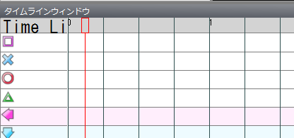

Marks are placed in the timeline window.

Double-click on the evenly spaced black vertical lines to place a mark.
The vertical position decides the kind of mark. For now, keep double-clicking on the vertical lines at the height of the square.

When it looks like the above, try playing the movie.
You should hear the tambourine sound, but it is probably out of rhythm. (If you can't tell, add more marks.) So align the vertical lines with the rhythm.
Move the mouse over the part labeled "TimeLine" at the top left of the timeline window (it may be cut off).
Dragging left or right there shifts all the marks.
Shift them and play repeatedly until the mark positions match the rhythm.
Once they match, adjust the vertical lines so that they pass through the marks.
Enter a value in the BPMOffset text box to the right of the BPM box so that the vertical lines pass through the marks.
BPMOffset takes a value from 0 up to the BPM value.

Depending on your environment, the timing of the hit sounds may sound different between PPDEditor and PPD.
For this reason, you can easily test in PPD from PPDEditor.
Choose an item from the Game menu to open the PPD window and play in PPD.
Adjust it so that it sounds right in PPD.

Now placing marks is easy.
All that is left is to play the movie and place marks so that they match the rhythm of the vocals.
It is a good idea to stick to one kind of mark (you can easily change it later).
To delete a mark, select it (it turns blue when selected) and press the Delete key.
You can also delete several marks at once by selecting a range.
Next